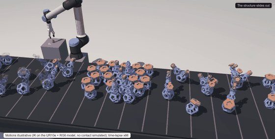
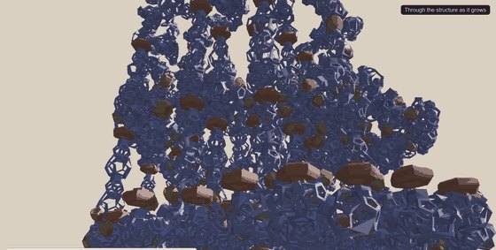

Robotic brick stacking with computer vision
A closed-loop masonry workflow where 2D and 3D sensing measure each brick's true pose and the robot compensates every placement.



Conventional robotic masonry assumes each component lands exactly where the model says it will. In practice bricks vary, grippers slip, and error accumulates course by course until the wall no longer matches the design.
This project closes that loop. The nominal design is held as a TopologicPy CellComplex; 2D and 3D sensing measure the true pose of every brick as it is placed; hand-eye calibration and tolerance checks reconcile the measurement against the model; and the graph is updated so the next placement is computed against the as-built state rather than the drawing.
The result is tolerance-aware masonry — a prerequisite for putting robotic assembly on a real construction site, where nothing is ever quite where the model expects.
A second strand extends the same idea from stacked courses to discrete aggregation: printed components that join by a peg-and-hole key, where the clearance designed into the joint is what absorbs the cell's positioning error. That work is in preparation for CAADRIA 2027 and is shown here only as a preview.
More in Robotic Fabrication

Large-scale concrete 3D printing
A gantry additive platform with a custom concrete mix, used to prototype architectural forms and structural elements at building scale.
View project →
Custom robotics, end-effectors & VTOL platforms
Purpose-built grippers, end-effectors and airframes designed, printed and assembled in-house so fabrication hardware adapts to the research.
View project →